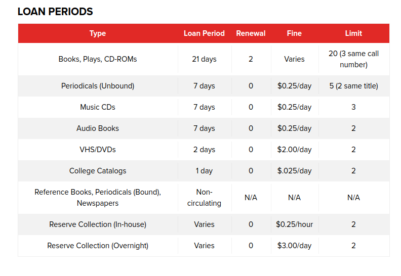
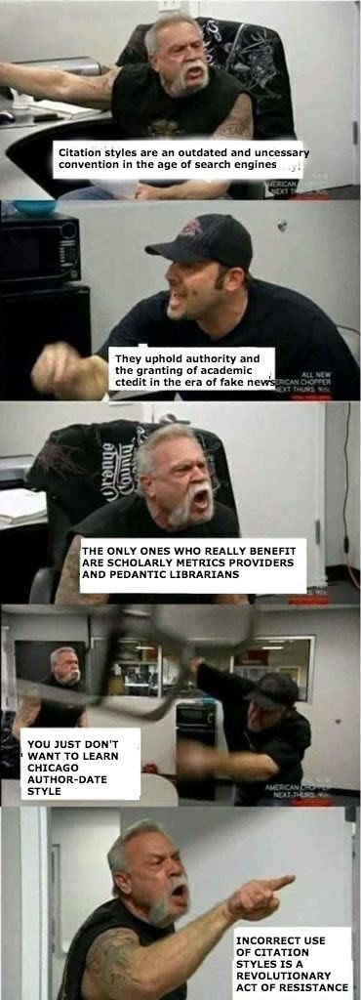

Library Orientation
How to locate books and ebooks, search article databases, and find scholarly articles.
by Jeffrey Sabol
slides available at https://libraryman.github.io/infolit/

Library Hours

Library Loan Policies
*LBCC students can also check out books at CSULB

How do we find Books and eBooks?


The Library Catalog
If you are trying to locate books or eBooks the Library Catalog is the place to start
What criteria do you use to evaluate an article?
Still have questions?
How to get help:
Email: jsabol@lbcc.edu
Phone: (562) 938-4232
Chat: From the Library website or catalog
slides available at www.infolit.jeffreystephensabol.org